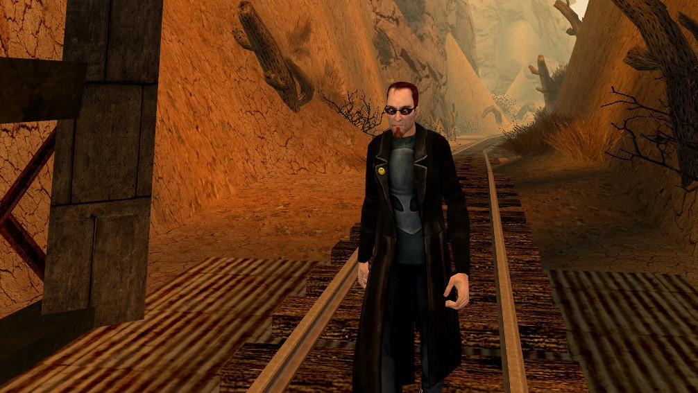

О Чуваке

Дни его очередной сумасшедшей недели
Понедельник. За пару дней до событий Чувак вместе с женой и псом Чампом приехали жить в город Парадайс, для того чтобы Чувак занимался разработкой компьютерных игр в компании Running with Scissors. В понедельник с самого утра на Чувака обрушивается град проблем — кондиционер не работает, жена требует выполнить некоторые поручения, нужно идти на работу, Чамп случайно справил нужду прямо на ботинки хозяина (за что получил пинка) и вдобавок машина сломалась. Также жена напоминает о гравийной дорожке (мороженом).
Вторник. Проснувшись утром, Чувак получает новый список заданий от жены, а также сам решает устроиться на работу общественным деятелем, собирая подписи за то, чтобы заставить конгрессменов играть в жестокие игры.
Среда. Делать в городе особенно нечего, поэтому Чувак вспоминает про своего покойного отца, Чувака Старшего, с которым отношения не сложились, поэтому на его могилу Чувак придёт «помочиться». Кроме этого, среда — день выборов, и Чувак как истинный гражданин своей страны обязан проголосовать. Вдогонку выясняется, что герою нужна рождественская ёлка, не смотря на то, что действия игры происходят в июле.
Четверг. Вокруг трейлера Чувака выросло так много сорняков, что он решил избавиться от них сразу, для этого ему нужно купить напалм. Также в городском супермаркете продают лучшую игрушку года — Кроччи. В голову Чувака пришла мысль купить бифштексы для своих друзей-психопатов. В дополнение ко всему этому полиция принесла квитанцию для оплаты штрафа. Однако выполнение этих заданий немного усложняется — в город для содействия полиции в борьбе с преступностью вводятся войска и спецназ.
Пятница. Проснувшись утром, Чувак получает новую порцию заданий. Ему нужно купить генератор для своей сломанной машины, забрать посылку с почты и сходить на день рождения своего дяди Дейва. В добавление к этому, если главному герою приспичит сходить по-маленькому, он поймёт, что болен гонореей, и когда справляет нужду, у него отнимаются жизни. А это значит, что ему необходимо подлечиться. Этот день особенно характерен тем, что на улицах появляется тяжёлая военная техника — танки и гусеничные бронетранспортёры. В конце дня, жена спрашивает Чувака о гравийной дорожке, после чего слышны выстрелы.